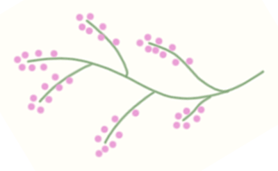
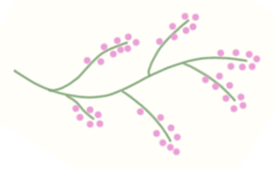

About
Welcome to a quick and easy guide to basic flower symbolism for some of the most iconic and beloved flowers. These meanings are taken from western culture, particularly Victorian England, and are gleaned from historical traditions and modern societal perception. This information has been gathered from various sources, which are all linked at the end of the page. It is important to note that the colour of the flower is often very important in delegating meaning. Further research is encouraged, a few resources are linked in the 'Resources' section of this web page. Local businesses to you such as florists and gardening and crafts suppliers are linked in this section as well, so you can shop, create and enjoy the flowers of meaning to you. Please enjoy this presentation of Floral Symbolism.
Index
MORERose
LOVE, PRIVACY, BEAUTY
The long cultural history of the rose has led to it being used often as a symbol. In ancient Greece, the rose was closely associated with the goddess Aphrodite.[35][36] In the Iliad, Aphrodite protects the body of Hector using the "immortal oil of the rose"[37][35] and the archaic Greek lyric poet Ibycus praises a beautiful youth saying that Aphrodite nursed him "among rose blossoms".[38][35] The second-century AD Greek travel writer Pausanias associates the rose with the story of Adonis and states that the rose is red because Aphrodite wounded herself on one of its thorns and stained the flower red with her blood. Following the Christianization of the Roman Empire, the rose became identified with the Virgin Mary. The colour of the rose and the number of roses received has symbolic representation.[41][42][36] The rose symbol eventually led to the creation of the rosary and other devotional prayers in Christianity.
Lavender
DEVOTION, LOYALTY, CONFESSION
Lavandula (common name lavender) is a genus of 47 known species of perennial flowering plants in the mints family, Lamiaceae.[1] It is native to the Old World, primarily found across the drier, warmer regions of mainland Eurasia, with an affinity for maritime breezes.[2] Lavender is found on the Iberian Peninsula and around the entirety of the Mediterranean coastline (including the Adriatic coast, the Balkans, the Levant, and coastal North Africa), in parts of Eastern and Southern Africa and the Middle East, as well as in South Asia and on the Indian subcontinent.[3] Many members of the genus are cultivated extensively in temperate climates as ornamental plants for garden and landscape use, for use as culinary herbs, and also commercially for the extraction of essential oils.[4] Lavender is used in traditional medicine and as an ingredient in cosmetics. Since the late 19th century, lavenders have been associated with the queer community.[49]
Daffodil
HAPPINESS, RESPECT, SELF-LOVE
The daffodil is the national flower of Wales, associated with Saint David's Day (March 1). The narcissus is also a national flower symbolising the new year or Nowruz in the Kurdish culture. In the West the narcissus is perceived as a symbol of vanity, in the East as a symbol of wealth and good fortune (see § Eastern cultures, below), while in Persian literature, the narcissus is a symbol of beautiful eyes. In western countries the daffodil is also associated with spring festivals such as Lent and its successor Easter. In Germany the wild narcissus, N. pseudonarcissus, is known as the Osterglocke or "Easter bell." In the United Kingdom the daffodil is sometimes referred to as the Lenten lily.[91][92][Note 4] Although prized as an ornamental flower, some people consider narcissi unlucky, because they hang their heads implying misfortune.[21] White narcissi, such as N triandrus "Thalia", are especially associated with death, and have been called grave flowers.[206][207] In Ancient Greece narcissi were planted near tombs, and Robert Herrick describes them as portents of death, an association which also appears in the myth of Persephone and the underworld.
Tulip
CARING, REMEMBERANCE, JOY
Cultivation of the tulip began in Iran (Persia), probably in the 10th century. Between 1634 and 1637, the enthusiasm for the new flowers in Holland triggered a speculative frenzy now known as the tulip mania that eventually led to the collapse of the market three years later. Tulip bulbs had become so expensive that they were treated as a form of currency, or rather, as futures, forcing the Dutch government to introduce trading restrictions on the bulbs.[47] Around this time, the ceramic tulipiere was devised for the display of cut flowers stem by stem. Vases and bouquets, usually including tulips, often appeared in Dutch still-life painting. To this day, tulips are associated with the Netherlands, and the cultivated forms of the tulip are often called "Dutch tulips". The Netherlands has the world's largest permanent display of tulips at the Keukenhof.
Lily
AFFECTION, LOVE, INNOCENCE
In the Victorian language of flowers, lilies portray love, ardor, and affection for your loved ones, while orange lilies stand for happiness, love, and warmth.[115] Lilies are the flowers most commonly used at funerals, where they symbolically signify that the soul of the deceased has been restored to the state of innocence.[116] Lilium formosanum, or Taiwanese lily, is called "the flower of broken bowl" by the elderly members of the Hakka ethnic group. They believe that because this lily grows near bodies of clean water, harming the lily may damage the environment, just like breaking the bowls that people rely on.[117] A different viewpoint proposes that parents discourage kids from picking lilies by informing them of the possible repercussions, like their dinner bowls breaking if they harm the flower. The indigenous Rukai people who call this same species bariangalay consider it as a symbol of bravery and perseverance.[118]
Gallery
Resources
Sources
Content
Wikipedia: List of plants with symbolism Almanac: Flower Meanings - Language of flowers Yard and Garden: Flowers and their meanings Wikipedia: Lily flower Wikipedia: The language of flowers Wikipedia: Rose flower Wikipedia: Daffodil (Narcissus) flower Wikipedia: Tulip flowerPictures
Rose: Pixabay - Rose Scented Rose Beauty Bush Rose Lavender: Pixabay - Flower Lavender Violet Bloom Daffodil: Pixabay - Wild Daffofils Tulip: Pexels - Yellow Purple and Red Tulip Flower During Day Time Lily: Wikipedia - Lilium{kind=link}